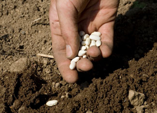

ISTOCKPHOTO/FRED DIDIER
It's important to plant your garden seeds at the right time, and the key is knowing when your area will see its last spring frost. Some garden plants taste even better after a little frost, but you'll sure be sorry if you put your warm season crops in the ground too soon.